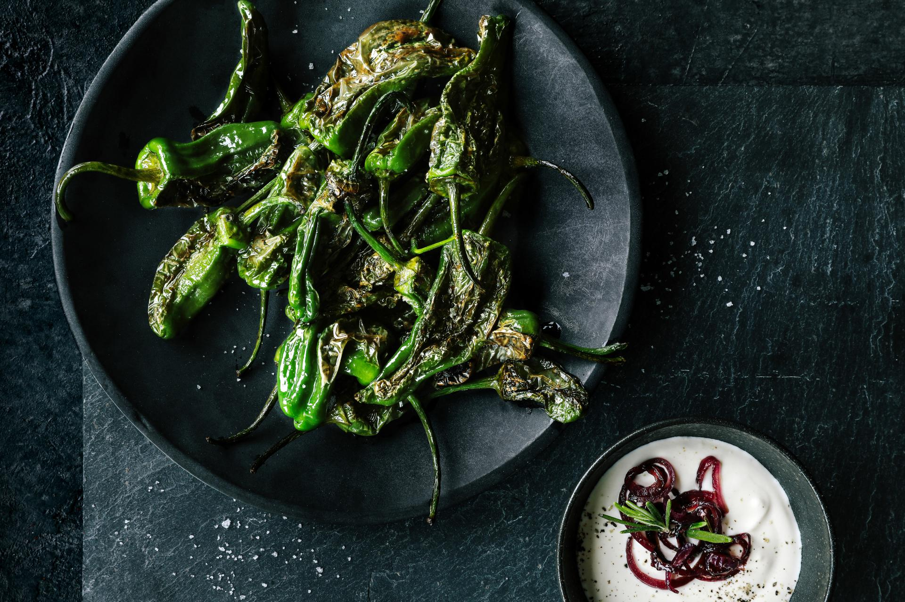

Charred Padron Peppers

Description
Serve these padron peppers as a side dish or starter as part of a Spanish-inspired feast. They're simple to make, require little prep and take five minutes to cook.
Ingredients
- 1 tbsp olive oil
- 500g padron peppers
Steps
- Heat the olive oil in a large frying pan over a high heat, or if using an air-fryer, heat to 205C for 3 mins. Fry the peppers, stirring frequently, for 5 mins until blistered and wilted. The peppers should be soft and slightly charred.
- Transfer the peppers to a serving plate and season with some sea salt. Serve with dips or as part of a tapas spread, if you like.